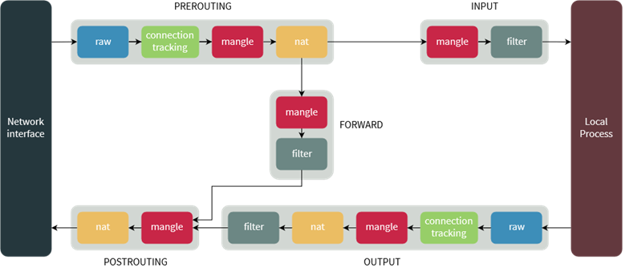

Introducción
En la presente actividad se realizó la interpretación y traducción de políticas de filtrado utilizando iptables en sistemas Linux. El objetivo fue comprender el flujo que sigue un paquete dentro del firewall, identificando cómo interactúan las tablas, cadenas y reglas para controlar el tráfico de red.
A través del análisis de comandos reales, se estudió la estructura sintáctica de iptables y su aplicación práctica para permitir, bloquear o registrar conexiones según puertos, direcciones IP, estados de conexión e interfaces de red.
1. Completa los espacios conforme se explica el flujo del paquete
Cuando un paquete llega al sistema, primero pasa por una tabla, después por una cadena y finalmente se ejecuta una regla.
2. Relaciona cada tabla con su propósito principal
| Tabla | Propósito principal | Ejemplo de uso |
|---|---|---|
| Filter | Filtrar tráfico de paquetes | Bloquear el tráfico de paquetes |
| Nat | Traducción de direcciones | Hacer NAT |
| Mangle | Modificación avanzada de paquetes | Marcar/Cambiar las cabeceras |
| Raw | Seguimiento de conexiones | Paquetes no inspeccionados |
| Security | Aplicación etiquetas de seguridad | Controlar seguridad adicional |
3. Anatomía de un comando iptables
iptables -A INPUT -p tcp -m multiport --dports 80,443 -j ACCEPT
4. Este comando permite:
Permite el tráfico TCP entrante a los puertos 80 y 443
5. Variables y opciones comunes
a) Limitar intentos por minuto
-- limit 1/minute
b) Filtrar por IP de origen
-s 192.168.1.0/24
c) Ver solo números, sin DNS (ni resolución de puertos)
-L -n
d) Ver reglas con contadores (paquetes y bytes)
-L -v
Evidencia y material multimedia
Diagrama Iptables

Video demostrativo
6. ¿Qué hace esta regla?
iptables -A INPUT -i eth0 -p tcp -m multiport --dports 22,80,443 \ -m state --state NEW,ESTABLISHED -j ACCEPT
Permite el tráfico TCP entrante a traves de la interfaz fisica eth0 en los puertos 20, 80 y 443 mientras sea una nueva conexion o una ya establecida.
7. Permitir tráfico HTTP entrante
iptables -A INPUT -p tcp --dport 80 -j ACCEPT
8. Permitir todo el tráfico saliente
iptables -A OUTPUT -j ACCEPT
9. Permitir SSH solo desde la IP 192.168.1.50
iptables -A INPUT -p tcp --dport 22 -s 192.168.1.50 -j ACCEPT
10. Permitir tráfico TCP entrante a puertos 80 y 443 solo si es conexión establecida o relacionada
iptables -A INPUT -p tcp -m multiport --dports 80,443 -m state --state ESTABLISHED,RELATED -j ACCEPT
11. Permitir tráfico TCP entrante por eth0 a 22, 80 y 443, registrar intentos y permitir solo NEW y ESTABLISHED
iptables -A INPUT -i eth0 -p tcp -m multiport --dports 22,80,443 -m state --state NEW -j LOG --log-prefix "Intento "
iptables -A INPUT -i eth0 -p tcp -m multiport --dports 22,80,443 -m state --state NEW,ESTABLISHED -j ACCEPT
Reflexión técnica
Esta actividad permitió comprender que el filtrado de paquetes no es solo la ejecución de comandos, sino la construcción lógica de políticas de seguridad coherentes. Entender el flujo del paquete y la jerarquía tabla-cadena-regla es fundamental para evitar configuraciones incorrectas que puedan exponer un sistema.
Además, se reforzó la importancia del control granular del tráfico, especialmente al trabajar con estados de conexión y restricciones por interfaz o dirección IP. En un entorno real, una mala interpretación de una regla puede generar vulnerabilidades críticas o interrupciones en el servicio.
El dominio de iptables representa una base sólida para la administración segura de servidores y redes, fortaleciendo la capacidad de diseñar mecanismos de defensa efectivos desde el nivel más bajo del sistema.
10. Referencias técnicas
- Ellingwood, J. (2022, 1 noviembre). A Deep Dive into Iptables and Netfilter Architecture. DigitalOcean. https://www.digitalocean.com/community/tutorials/a-deep-dive-into-iptables-and-netfilter-architecture